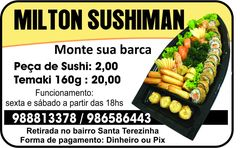

Conheça um pouco da historia de Milton Sushiman.
Milton tem 15 anos de experiencia na culinaria Japonesa, e agora em 2021 ele decidiu começar seu proprio negocio, fazendo barcas de sushi, eventos e etc.
Com sushis feitos com ingredientes de qualidade ele esta recebendo boas avaliações.Com isso na região da Pampulha da grande BH ele está sendo considerado ate mesmo um dos melhores da região.
Saiba mais visualizando as outras paginas
obs:Os pedidos são feitos pelo instagram/whatsapp e são entregues em sua casa.
Clique aqui para acessar o instagram